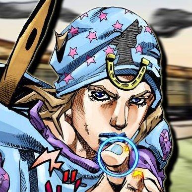

Jojo Steel Ball Run

| Início JOJO parte 1 JOJO parte 2 JOJO parte 3 JOJO parte 4 JOJO parte 5 JOJO parte 6 JOJO parte 7 JOJO parte 8 |


Johnny Joestar (ジョ 二 ー · ジョー スター) é um piloto no Steel Ball Run e um dos dois principais protagonistas da Parte VII: Steel Ball Run, junto com Gyro Zeppeli. Ele é Jonathan Joestar do universo alternativo, o protagonista da Parte I: Phantom Blood
Johnny é agressivo, contundente, teimoso e obstinado.
Johnny é agressivo, contundente, teimoso e obstinado.
Gyro Zeppeli, um executor do reino de Neapolis e Johnny Joestar, um ex-jóquei americano que perdeu o uso das suas pernas, se encontram através do destino e decidem entrar para a Steel Ball Run, uma corrida de cavalos que cruza o território norte-americano de San Diego até a cidade de Nova Iorque. Organizada pelo magnata Stephen Steel, o vencedor da corrida receberá 50 milhões de dólares.
Sem que Steel ou os competidores saibam, o atual Presidente dos Estados Unidos, Funny Valentine, está usando a corrida para encontrar as lendárias partes do corpo de Jesus Cristo que estão escondidas por todo o país. Uma vez encontradas, essas partes podem ser vinculadas a uma pessoa e dar poderes especiais.